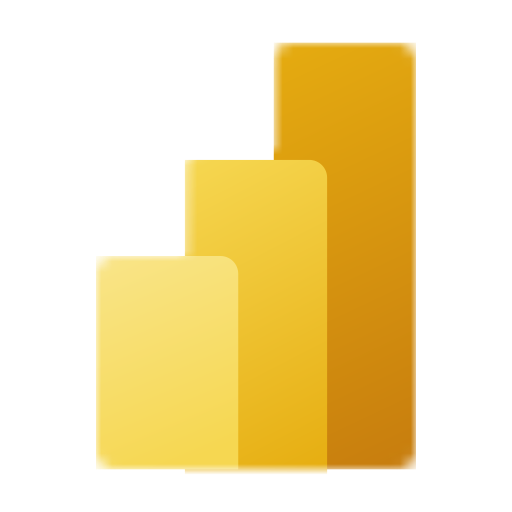
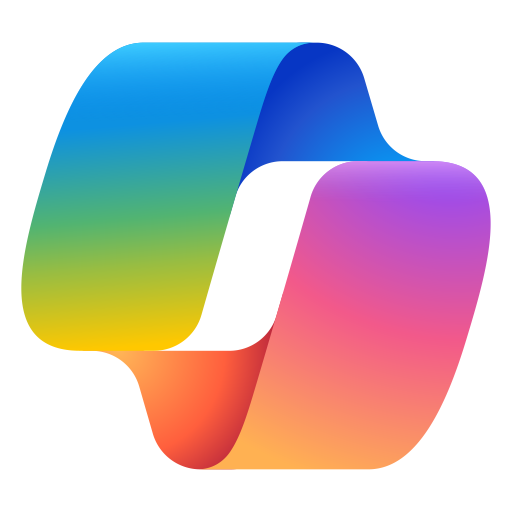

Hyper-engineered for Principal Data Architect / Lead Technical Consultant roles at tier-1 GCCs.
Santosh Jammi

PL-300 Power BI Analyst
AI-900 Azure AI Fundamentals DP-900 Data FundamentalsProfessional Summary
Strategic Principal Data Architect with 8+ years of experience and a proven 5-year track record of leading high-performance engineering squads and managing direct executive stakeholder engagements. Expert in architecting scalable Medallion Lakehouse platforms on Microsoft Azure and Microsoft Fabric, designing enterprise GenAI / RAG data pipelines, and bridging technical delivery with executive business vision. Pioneer in Cloud FinOps, slashing operational spend and latency by 40%+ through dynamic DIU allocation and Fabric Capacity Unit (CU) optimization. Deep domain expertise in the EU BFSI sector, enforcing rigorous GDPR, data sovereignty, and Zero Trust governance while delivering 99.9% mission-critical platform reliability.
Core Technical Competencies
Professional Experience
Strategic engineering leader serving as the primary onsite technical point of contact for Product Owners and Architects. Managed offshore delivery of 5+ senior engineers, ensuring zero schedule slippage across sprint deliverables while building highly resilient systems.
Leadership Served as primary technical point of contact for onsite Product Owners and Architects, facilitating requirement discovery, governing offshore delivery of 5+ senior engineers, and ensuring zero schedule slippage across all sprint deliverables.
Lakehouse Designed a robust Medallion Architecture (Bronze / Silver / Gold) managing 5TB+ data. Implemented idempotent ETL patterns with strict integrity constraints (MERGE INTO, ACID Delta Lake, and Apache Iceberg / Delta UniForm interoperability) to ensure 100% data consistency across all pipeline retries and transient cluster failures.
GenAI & RAG Engineered automated data preparation and embedding pipelines for enterprise GenAI / RAG workloads utilizing Azure OpenAI and Azure AI Search; integrated Microsoft Fabric Copilot for accelerated natural-language data discovery across high-volume repositories.
FinOps Led compute optimization — dynamically tuning DIUs and Parallelism in Azure Data Factory and governing Fabric Capacity Units (CUs) — delivering a 40% reduction in data processing latency and significant recurring cloud cost savings across enterprise pipelines.
Fabric Architected resilient Microsoft Fabric semantic models using Direct Lake mode over OneLake, strictly managing F64 capacity memory guardrails (25 GB threshold) to entirely eliminate refresh failures and deliver sub-second render speeds for C-level dashboards.
DevOps & DataOps Automated CI/CD via Azure DevOps / YAML with automated rollback strategies; enforced strict Schema Evolution policies and automated data quality checks to maintain 100% downstream platform stability with 99.9% availability under GDPR compliance.
Orchestrated enterprise data modernization pipelines, translating complex client business logic into high-efficiency Azure infrastructure.
ETL Performance Re-engineered legacy pipelines using Azure Data Factory, solving the Small File Problem and cutting query execution times by 40% through parallelism tuning, partition optimization, and Integration Runtime right-sizing.
Reporting Redesigned Power BI models with aggregation tables, improving report load speeds by 25% and achieving high availability across all executive and operational reporting workloads.
Led end-to-end data platform engineering and BI solution delivery, specializing in secure architecture design and transactional query tuning for financial reporting workloads.
Data Quality Improved data model accuracy by 20% through automated data cleansing and validation frameworks, establishing consistent data quality standards across enterprise financial reporting pipelines.
Security Integrated Power BI with SaaS applications, implementing Row-Level Security (RLS) for sensitive financial data and designing role-based access controls governing the end-to-end lifecycle from data modeling to dashboard deployment.
Performance Increased data processing efficiency by 15% through advanced T-SQL query tuning, index optimization, and stored procedure refactoring across large-scale SQL Server and Azure SQL workloads.
Platform Collaborated with cross-functional teams to develop high-impact data products utilizing SQL Server and Azure services for efficient large-scale processing, supporting business intelligence initiatives across multiple domains.